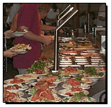

"Enjoy Food that is
Creatively Inspired"
The food you are about to experience is Mongolian BBQ.
What the heck is Mongolian Barbeque ??

- Take a numbered clip from your table
and attach it to a plate.
- You can find plates at the beginning
of the line.
- Create your own plate by choosing
rice or noodles,
many different fresh vegetables and a variety of meats & poultry, and
topping it off with your choice of oils and sauces, and lots of
spices.
- The chef will perform the stir-fry
show on our center Grill, and
the waitstaff will bring your personally selected concoction to your
seat.
- Please also help yourself to soups
and a variety of other hot-n-cold appetizers.
- And don't forget to save room for
our famous desserts!
Enjoy the upbeat & interactive dinning
experience here at Mongolian Café!
|